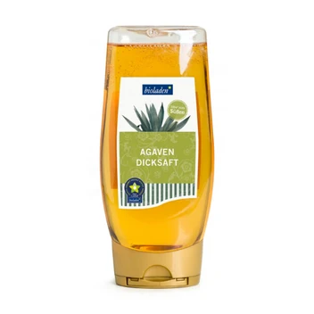

bioladen* Agavendicksaft im Spender, 500g
4,99 €
Hersteller: Weiling GmbH (Erlenweg 134, 48653 Coesfeld)
Jetzt im Online-Shop kaufen ↗Bestellung & Bezahlung sicher über unseren Partner-Shop bioladen-borna.de

Hersteller: Weiling GmbH (Erlenweg 134, 48653 Coesfeld)
Jetzt im Online-Shop kaufen ↗Bestellung & Bezahlung sicher über unseren Partner-Shop bioladen-borna.de